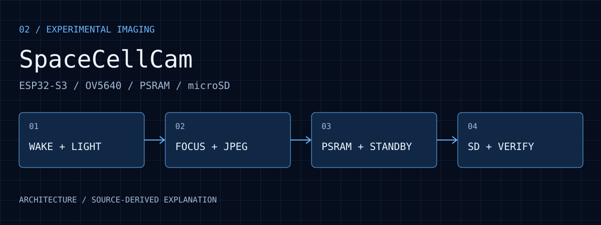
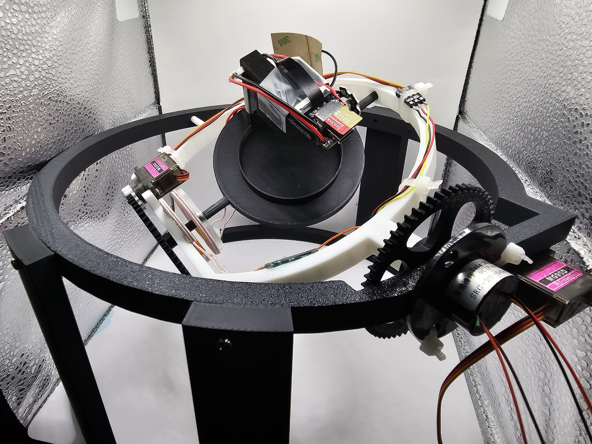

Reuse focus with a scene constraint
A fixed scene can avoid repeated autofocus searches. A changing target distance may instead produce blur, so images and logs must be interpreted together.
SpaceCellCam
ESP32-S3 and OV5640 AF firmware coordinates lighting, focus reuse, JPEG capture and microSD storage for observable experimental imaging.

01 / PURPOSE
Long-running biological observation needs an explicit capture sequence and recoverable images. This firmware schedules the camera, LED, memory and storage as one cycle, with logs that distinguish focus, capture, standby and file errors.
02 / ARCHITECTURE
LED preheat and sensor wake establish the pre-capture state.
OV5640 AF establishes a first focus and reuses its locked state.
A PSRAM JPEG copy releases the camera frame buffer earlier.
Temporary SD files, rename and size checks organize saving.
03 / WORKFLOW
Current configuration targets a 10-second period and 20 MHz XCLK. The sensor wakes and the LED settles for 300 ms before capture. These are configuration values.
The first capture uses center autofocus and locks it. Later captures reuse that lock, discard one transition frame and acquire a QSXGA JPEG.
The JPEG is copied into PSRAM before returning the camera buffer. The sensor can then enter standby before SD writing begins.
A temporary file is written, renamed and checked for size. Each bucket holds 500 images; numbering is recovered at boot to avoid overwriting previous captures.
04 / DECISIONS
A fixed scene can avoid repeated autofocus searches. A changing target distance may instead produce blur, so images and logs must be interpreted together.
A PSRAM copy requires temporary memory but lets SD writes happen after LED off and sensor standby.
Focus failure, frame timeout, short writes and size mismatches have distinct logs to localize the failing stage.
05 / EVIDENCE
The public README and firmware describe the 10-second target, focus reuse, standby and temporary-file verification.
Compare reuse-locked-focus, standby enter/wake and SD verification messages against the actual captured images.
No new capture experiment was performed for this page. Configuration alone cannot establish achieved timing, power, optical quality or long-run data completeness.
An earlier presentation photograph adds physical context for mounting the camera with the rotating sample platform. It is labeled separately from the current public firmware, rather than used as a substitute for current functional or power tests.

A physical platform photograph from the Physarum_Microgravity presentation shows the microSD imaging module, central sample position and dual-axis mechanism. It illustrates how imaging was mounted with the sample platform. This is an earlier hardware integration record, not a test of the current public AF/standby firmware; it establishes no achieved 10-second timing, focus quality, battery life or microgravity performance.
Open full size ↗06 / ANALYSIS
Returning the frame buffer and entering standby separates slower SD work from camera resource ownership, at the cost of temporary PSRAM.
A reuse-locked-focus log identifies the code path. Image sharpness is still needed to assess whether the target distance matches the focus.
Size verification can detect short writes, but alone does not prove JPEG decoding, sharpness or capture completeness over time.
07 / REPRODUCE
08 / LIMITS
VCM noise during standby/wake does not by itself mean a new autofocus search. ESP32-S3 internal temperature is not camera or VCM temperature. The project name does not establish space-environment or orbital qualification.
09 / SOURCES
Selected images retain their visual content. Captions distinguish prototype photographs, application interfaces, archived records, analysis and simulations.